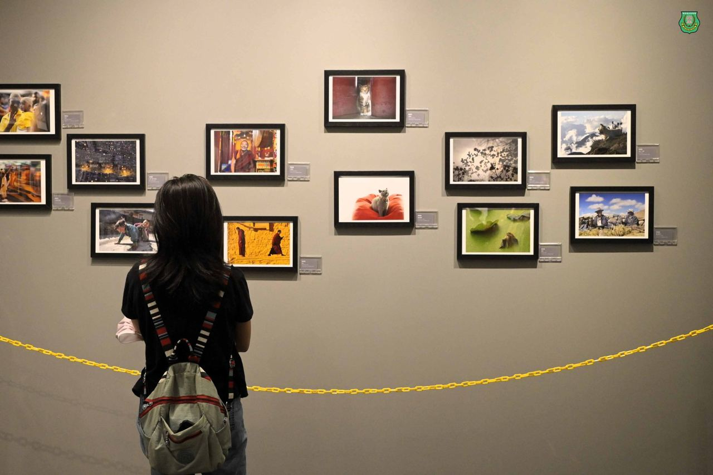
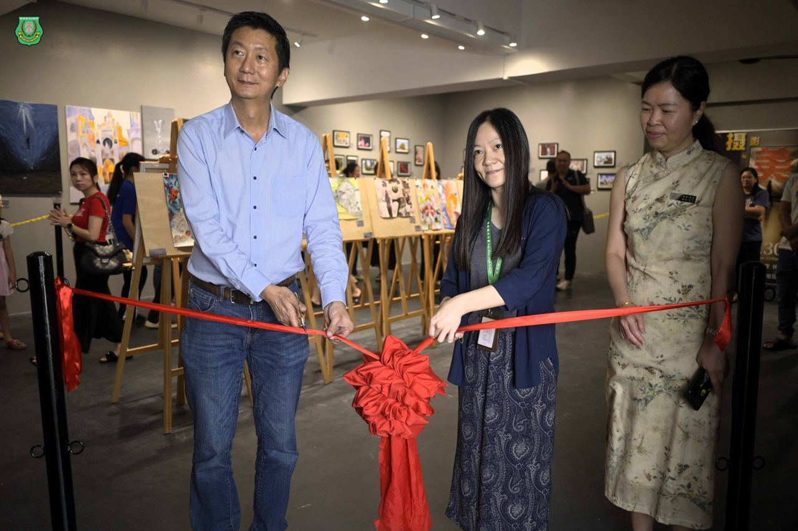
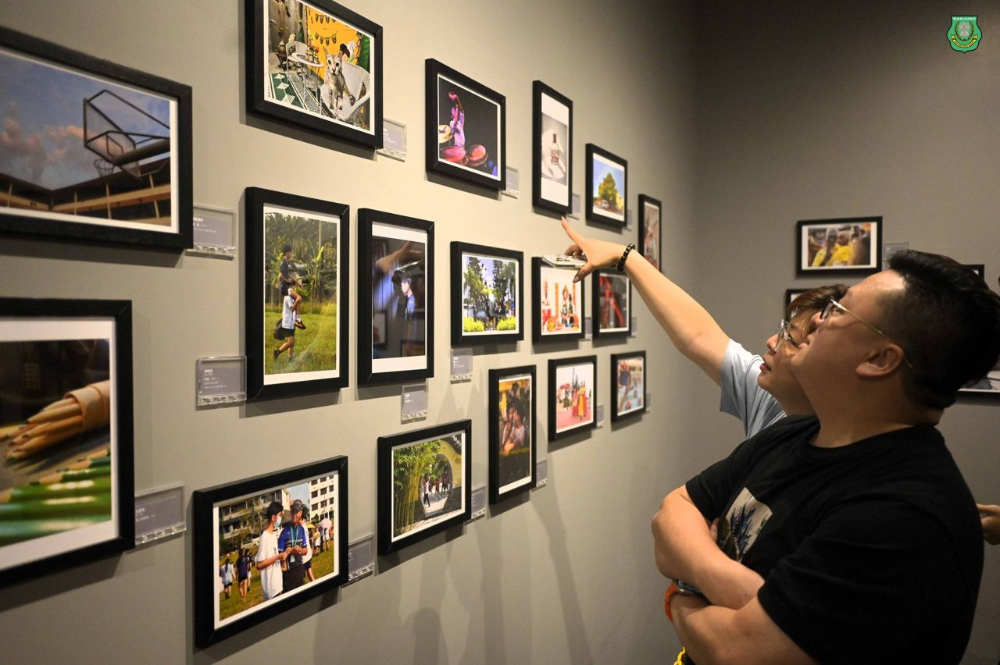
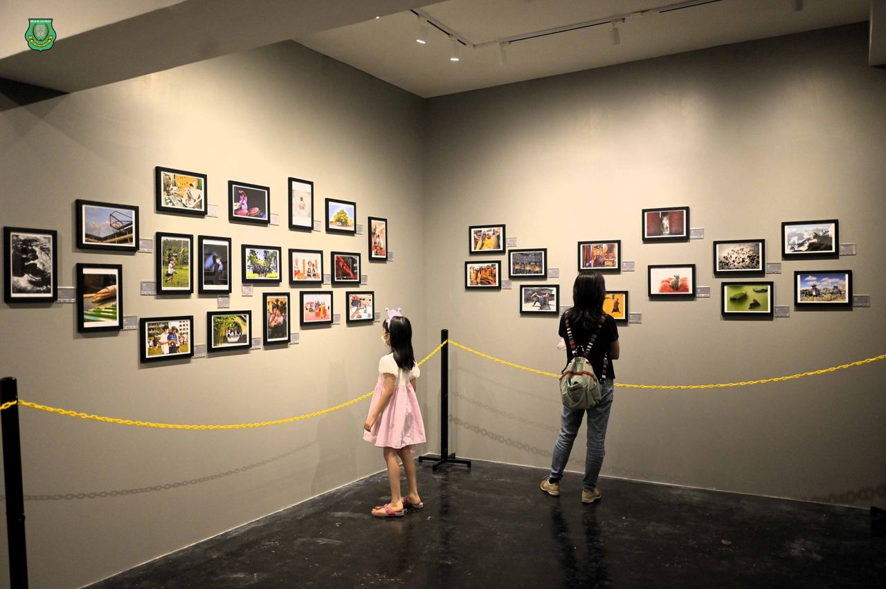
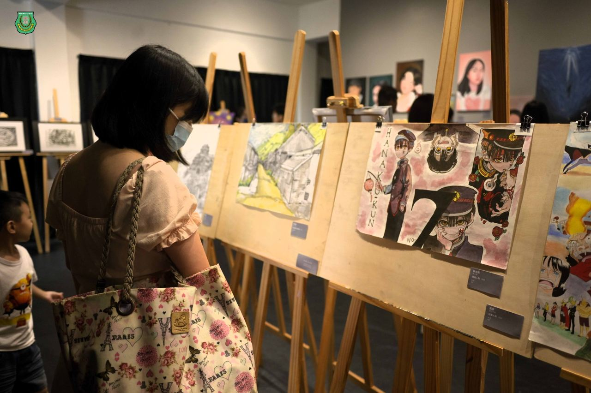
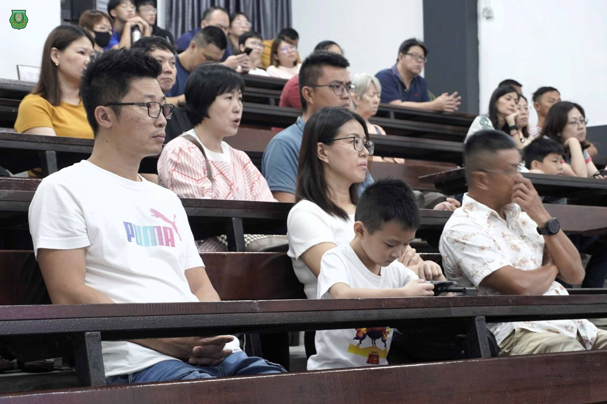
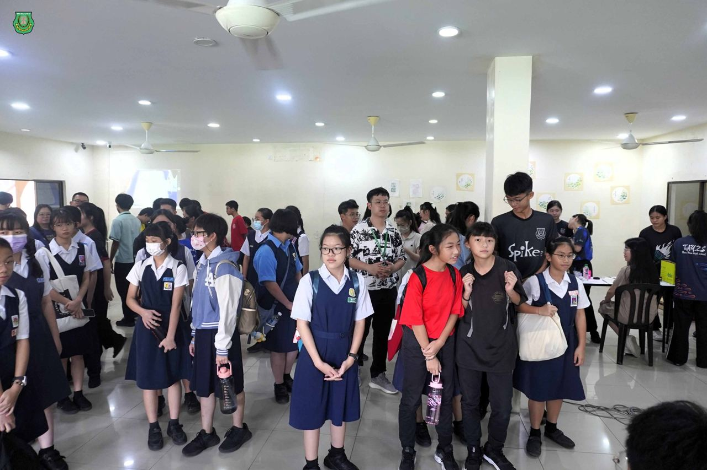

南华独中校园开放日暨体验课
南华独中校园开放日暨体验课
摄影与美术展成焦点
本校于上周六11月30日举办校园开放日暨体验课，吸引了众多社区居民、家长和学生参与，校园内洋溢着欢声笑语，成为一片活力满溢的教育乐园。
开放日当天设有课程说明会，由本校校长陈丽冰博士详解南华独中的课程内容，吸引不少关心本校办学理念与华文教育的家长前来倾听与交流。此外，于南华独中展览馆进行的“摄影与美术展推介礼”由董事长颜登逸先生与黄鹙葭美术老师进行剪彩后，随即开放予社区民众与学生家长们参观，师生们的摄影与美术作品受到众人一致好评，纷纷在美育桃花源现场驻足欣赏。
与此同时，校园各处的校本课程与选修课成果展也在同时展开，其中包括有音乐展、趣味科学实验展、木工手艺展、运动技艺体验课、美容基础班、美甲基础班、中华文化艺术展、AI象棋机器人、咖啡与甜点艺术、ROBOTIC、小厨师、棕榈手工制品展等众多的学习成果与体验课，不但吸引众人前往观赏体验，更是成为校园中百花齐放的教育盛况。
南华独中校长陈丽冰博士在接受采访时表示，此次活动旨在展示学生的学习成果，同时邀请社区居民共同体验南华独中多元丰富的校本与选修课程，使学习更贴近生活。她强调教育的使命是让每个孩子成为独一无二的自己，发挥个人特长，关注每个学生的独特性，激发他们的内在潜能。






